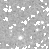
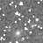
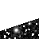
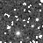
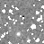
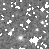

Genuine SPHEREx-derived visual previews. Field processed; named-source visibility, motion and variability are unverified. Wavelength, masking and calibration differences remain. Full original processing manifest

2025-11-03T17:02:55.717 UTC · 4.301 µm 2025W45_1A_0154_1

2025-11-05T05:00:52.967 UTC · 3.999 µm 2025W45_1A_0497_4

2025-12-12T06:44:30.526 UTC · 3.797 µm 2025W50_2A_0231_1

2026-04-23T12:12:13.870 UTC · 4.103 µm 2026W17_2A_0001_4

2026-04-29T05:06:42.531 UTC · 4.357 µm 2026W18_1A_0454_3

2026-05-12T00:53:32.484 UTC · 4.068 µm 2026W20_1A_0400_1